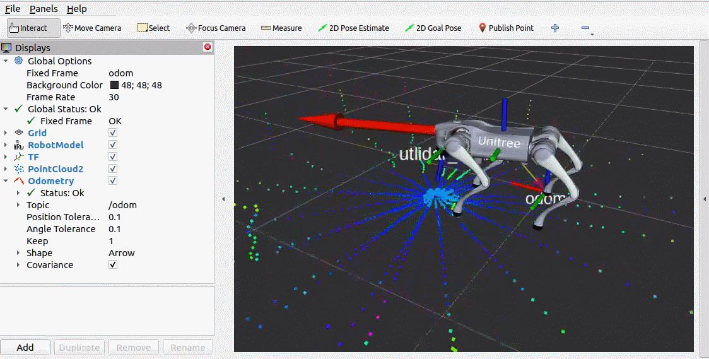

3.4.2 驱动包实现（C++）
1.节点实现
功能包 go2_driver 的 src 目录下，新建 C++ 文件 driver.cpp，并编辑文件，输入如下内容：
#include <rclcpp/rclcpp.hpp>
#include <sensor_msgs/msg/joint_state.hpp>
#include "unitree_go/msg/low_state.hpp"
#include "unitree_go/msg/imu_state.hpp"
#include "unitree_go/msg/motor_state.hpp"
#include "unitree_go/msg/sport_mode_state.hpp"
#include "nav_msgs/msg/odometry.hpp"
#include "tf2_ros/transform_broadcaster.h"
#include "tf2/LinearMath/Quaternion.h"
using namespace std::placeholders;
class Driver : public rclcpp::Node
{
public:
Driver(): Node("driver")
{
// 初始化参数
this->declare_parameter("publish_odom_tf",true);
this->declare_parameter("odom_frame","odom");
this->declare_parameter("base_frame","base");
publish_odom_tf = this->get_parameter("publish_odom_tf").as_bool();
odom_frame = this->get_parameter("odom_frame").as_string();
base_frame = this->get_parameter("base_frame").as_string();
// 发布里程计消息
sport_mode_state_suber_ = this->create_subscription<unitree_go::msg::SportModeState>(
"lf/sportmodestate", 10, std::bind(&Driver::state_callback, this, _1));
odom_pub_ = this->create_publisher<nav_msgs::msg::Odometry>("odom",10);
tf_broadcaster_ = std::make_unique<tf2_ros::TransformBroadcaster>(*this);
// 发布关节消息
joint_names_ = {
"FL_hip_joint", "FL_thigh_joint","FL_calf_joint",
"FR_hip_joint", "FR_thigh_joint","FR_calf_joint",
"RL_hip_joint", "RL_thigh_joint","RL_calf_joint",
"RR_hip_joint", "RR_thigh_joint","RR_calf_joint"
};
joint_state_pub_ = this->create_publisher<sensor_msgs::msg::JointState>("/joint_states", 10);
low_state_suber_ = this->create_subscription<unitree_go::msg::LowState>(
"lf/lowstate", 10, std::bind(&Driver::low_state_callback, this, _1));
}
private:
rclcpp::Publisher<nav_msgs::msg::Odometry>::SharedPtr odom_pub_;
std::unique_ptr<tf2_ros::TransformBroadcaster> tf_broadcaster_;
rclcpp::Subscription<unitree_go::msg::LowState>::SharedPtr low_state_suber_;
rclcpp::Subscription<unitree_go::msg::SportModeState>::SharedPtr sport_mode_state_suber_;
rclcpp::Publisher<sensor_msgs::msg::JointState>::SharedPtr joint_state_pub_;
std::vector<std::string> joint_names_;
bool publish_odom_tf;
std::string odom_frame, base_frame;
void state_callback(unitree_go::msg::SportModeState::SharedPtr data)
{
// 创建里程计消息
nav_msgs::msg::Odometry odom_msg;
// 设置时间戳
// odom_msg.header.stamp.sec = data->stamp.sec;
// odom_msg.header.stamp.nanosec = data->stamp.nanosec;
odom_msg.header.stamp = this->now();
odom_msg.header.frame_id = odom_frame;
odom_msg.child_frame_id = base_frame;
// 设置位置
odom_msg.pose.pose.position.x = data->position[0];
odom_msg.pose.pose.position.y = data->position[1];
odom_msg.pose.pose.position.z = data->position[2];
// 设置姿态
odom_msg.pose.pose.orientation.w = data->imu_state.quaternion[0];
odom_msg.pose.pose.orientation.x = data->imu_state.quaternion[1];
odom_msg.pose.pose.orientation.y = data->imu_state.quaternion[2];
odom_msg.pose.pose.orientation.z = data->imu_state.quaternion[3];
// 设置线速度
odom_msg.twist.twist.linear.x = data->velocity[0];
odom_msg.twist.twist.linear.y = data->velocity[1];
odom_msg.twist.twist.linear.z = data->velocity[2];
// 设置角速度
odom_msg.twist.twist.angular.z = data->yaw_speed;
// 发布里程计消息
odom_pub_->publish(odom_msg);
// 根据参数选择是否发布坐标变换
if (publish_odom_tf) {
geometry_msgs::msg::TransformStamped transformStamped;
// 设置时间戳
// transformStamped.header.stamp.sec = data->stamp.sec;
// transformStamped.header.stamp.nanosec = data->stamp.nanosec;
transformStamped.header.stamp = this->now();
transformStamped.header.frame_id = odom_frame;
transformStamped.child_frame_id = base_frame;
// 设置平移
transformStamped.transform.translation.x = data->position[0];
transformStamped.transform.translation.y = data->position[1];
transformStamped.transform.translation.z = data->position[2];
// 设置旋转
transformStamped.transform.rotation = odom_msg.pose.pose.orientation;
// 发布坐标变换
tf_broadcaster_->sendTransform(transformStamped);
}
}
void low_state_callback(unitree_go::msg::LowState::SharedPtr data)
{
// Populate the joint state message
auto joint_state_msg = sensor_msgs::msg::JointState();
joint_state_msg.header.stamp = this->now();
joint_state_msg.name = joint_names_;
auto ms = data->motor_state;
for (size_t i = 0; i < 12; i++)
{
joint_state_msg.position.push_back(ms[i].q);
// RCLCPP_INFO(this->get_logger(),"角度: = %.6f",ms[i].q);
}
joint_state_pub_->publish(joint_state_msg);
}
};
int main(int argc, char *argv[])
{
rclcpp::init(argc, argv);
rclcpp::spin(std::make_shared<Driver>());
rclcpp::shutdown();
return 0;
}
2.编写params、rviz、launch文件
1.params文件
在当前功能包下新建目录 params，params 目录中新建 driver.yaml 文件，并输入如下内容：
/**:
ros__parameters:
base_frame: base
odom_frame: odom
publish_odom_tf: true
use_sim_time: false
2.rviz文件
在当前功能包下新建目录 rviz。再启动 rviz2 并将配置文件命名为display.rviz，然后保存至该目录下以作备用。
3.launch文件
在当前功能包下新建目录 launch，launch 目录中新建 driver.launch.py，并输入如下内容：
from launch import LaunchDescription
from launch_ros.actions import Node
# 封装终端指令相关类--------------
# from launch.actions import ExecuteProcess
# from launch.substitutions import FindExecutable
# 参数声明与获取-----------------
from launch.actions import DeclareLaunchArgument
from launch.substitutions import LaunchConfiguration
# 文件包含相关-------------------
from launch.actions import IncludeLaunchDescription
from launch.launch_description_sources import PythonLaunchDescriptionSource
# 分组相关----------------------
# from launch_ros.actions import PushRosNamespace
# from launch.actions import GroupAction
# 事件相关----------------------
# from launch.event_handlers import OnProcessStart, OnProcessExit
# from launch.actions import ExecuteProcess, RegisterEventHandler,LogInfo
# 获取功能包下share目录路径-------
from ament_index_python.packages import get_package_share_directory
from launch.conditions import IfCondition
import os
def generate_launch_description():
go2_descrition_pkg = get_package_share_directory("go2_description")
go2_driver_pkg = get_package_share_directory("go2_driver")
# 声明一个布尔参数，用于控制是否启动 joint_state_publisher
use_rviz = DeclareLaunchArgument(
name="use_rviz",
default_value="true", # 默认值为 true
)
return LaunchDescription([
use_rviz,
IncludeLaunchDescription(
launch_description_source=PythonLaunchDescriptionSource(
launch_file_path=os.path.join(go2_descrition_pkg,"launch","display.launch.py")
),
launch_arguments=[("use_joint_state_publisher","false")]
),
Node(
package="go2_driver",
executable="driver",
output="screen",
parameters=[os.path.join(go2_driver_pkg,"params","driver.yaml")]
),
Node(
package="rviz2",
executable="rviz2",
condition=IfCondition(LaunchConfiguration("use_rviz")),
arguments=["-d",os.path.join(go2_driver_pkg,"rviz","display.rviz")]
),
# 静态坐标变换
# 官方URDF文件中的雷达坐标系是radar，发布的点云中使用的坐标系是utlidar_lidar,
# 为了雷达能正常显示,可以直接修改URDF中的坐标系为utlidar_lidar，
# 或者可以将utlidar_lidar等位姿的变换至radar
Node(
package="tf2_ros",
executable="static_transform_publisher",
arguments=["--frame-id", "radar", "--child-frame-id", "utlidar_lidar"]
),
# 速度指令转换节点，可以将geometry_msgs::msg::Twist 转换成 unitree_api::msg::Request 消息
Node(
package="go2_twist_bridge",
executable="twist_bridge"
)
])
3.编辑配置文件
1.package.xml
在创建功能包时，所依赖的功能包已经自动配置了，配置内容如下：
<depend>rclcpp</depend>
<depend>unitree_go</depend>
<depend>sensor_msgs</depend>
<depend>tf2</depend>
<depend>tf2_ros</depend>
<depend>geometry_msgs</depend>
<depend>nav_msgs</depend>
2.CMakeLists.txt
CMakeLists.txt 中添加如下配置：
add_executable(driver src/driver.cpp)
target_include_directories(driver PUBLIC
$<BUILD_INTERFACE:${CMAKE_CURRENT_SOURCE_DIR}/include>
$<INSTALL_INTERFACE:include>)
target_compile_features(driver PUBLIC c_std_99 cxx_std_17) # Require C99 and C++17
ament_target_dependencies(
driver
"rclcpp"
"unitree_go"
"sensor_msgs"
"tf2"
"tf2_ros"
"geometry_msgs"
"nav_msgs"
)
install(TARGETS driver
DESTINATION lib/${PROJECT_NAME})
install(DIRECTORY launch rviz params
DESTINATION share/${PROJECT_NAME}
)
3.编译
终端中进入当前工作空间，编译功能包：
colcon build --packages-select go2_driver
4.执行
在当前工作空间下，启动终端，并输入如下指令：
. install/setup.bash
ros2 launch go2_driver driver.launch.py
在启动的launch文件中，将 Fixed Frame 设置为 odom，添加 Robot Model、TF、PointCloud2、Odometry等插件，合理配置插件后，即可显示如下图所示内容（为了方便后续使用，建议将当前配置保存进rviz目录）。

再新建一个终端，启动 ROS2 中常用的键盘控制节点：
ros2 run teleop_twist_keyboard teleop_twist_keyboard
通过键盘也可以控制 go2 的运动。